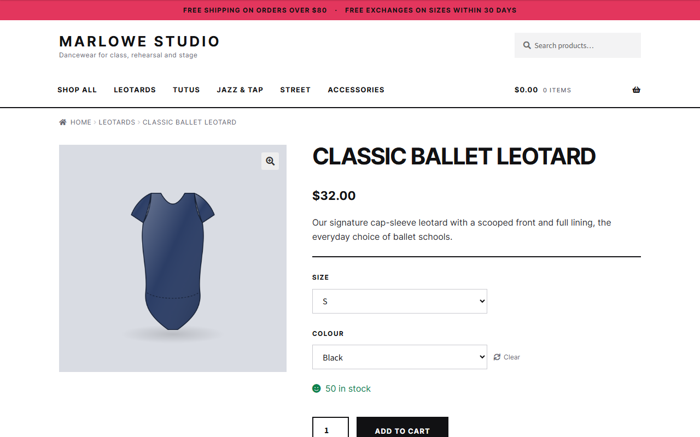
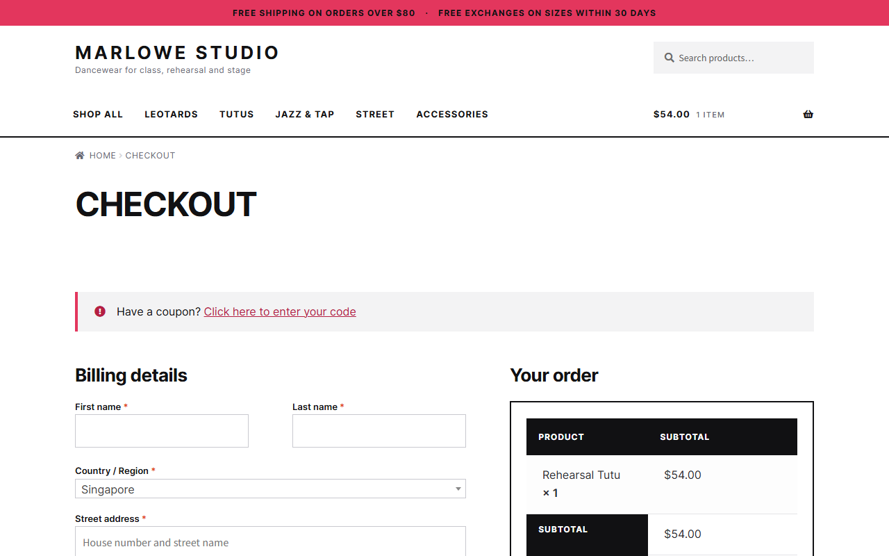
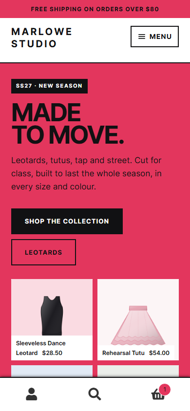

03 · E-commerce
Marlowe Studio, a dancewear store on WooCommerce
A complete shop the owner can run on their own: catalogue with sizes and colours, cart, checkout and orders. It runs on WordPress with a custom Storefront child theme, so the look is the brand's and the shop stays standard WooCommerce underneath.
20products
12categories
79size & colour variations
#150order placed end to end
The store



On a phone
- LayoutThe hero stacks, products sit two to a row like a fashion catalogue, and the cart, search and account live in a bar at the bottom of the screen.
- CheckedHomepage, shop, product, cart and checkout at 375 px and 1280 px: no sideways scrolling and no console errors.

What was built
- Catalogue20 products with a unique SKU, price and image each, in 12 categories
- Variations79 size and colour variations generated from WooCommerce attributes
- ThemeA Storefront child theme: brand type and colour, a sales homepage, a service band, category tiles and a footer with the shop's own links
- Product imagesOne illustration per product, drawn in SVG and rendered to PNG so every image shares the same framing and light
- CopyShort and long descriptions for every product, with fabric and care notes
- CheckoutField validation, direct bank transfer with instructions, and cash on delivery
- OrdersOrder #150 placed from cart to "order received", with its number generated
WordPress 7.1.3 · WooCommerce 11.2.1 · Storefront child theme · PHP · CSS
Self-initiated sample. The brand, products, prices, store policies and customer data are fictional. The store runs on a local server with SQLite (a live shop would use MySQL), payments are in test mode, and the product images are illustrations, not photographs.